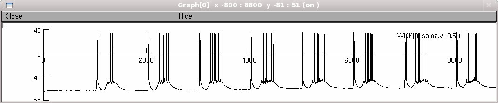

This is the readme for the model associated with Aguiar P, Sousa M, Lima D (2010) NMDA channels together with L-type calcium currents and calcium-activated nonspecific cationic currents are sufficient to generate windup in WDR neurons. J Neurophysiol 104:1155-66 This model is also available as a web link through the paper: http://www.fc.up.pt/pessoas/pauloaguiar/WDRmodel.zip You can either auto-launch the model or download the zip file, expand compile the mod files, and run mosinit.hoc to regenerate figure 2C:  20120330 CaIntraCellDyn.mod had it's solve method updated from euler to derivimplicit. For more information see: http://www.neuron.yale.edu/phpBB/viewtopic.php?f=28&t=592 20241125 Updated hoc files to use Random123